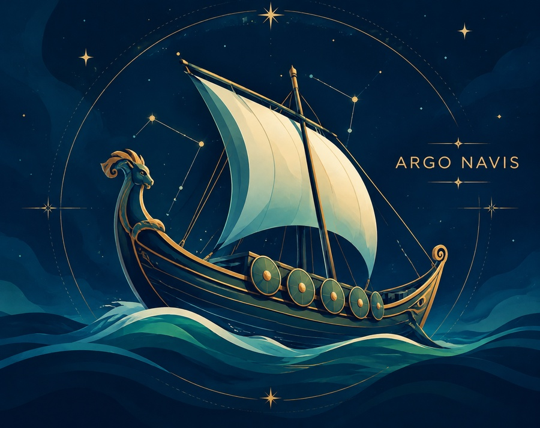

ArgoSUAS
Rede de Políticas Públicas de Roraima
Diretório técnico de equipamentos de Políticas Públicas do estado de Roraima.
Use a senha compartilhada da equipe para acessar o diretório de equipamentos.
Acesso destinado à equipe técnica do SUAS em Boa Vista - RR. Em caso de dúvida sobre a senha, contate a coordenação.
Esta senha apenas esconde a tela — como o app roda direto no navegador, quem tiver acesso ao arquivo do site consegue ver o conteúdo mesmo sem a senha. Antes de emprestar ou devolver um computador compartilhado, use "Apagar dados salvos neste dispositivo" no rodapé para remover nomes, anotações e anexos de atendidos.

Sistema Único de Assistência Social · Boa Vista, Roraima
Diretório técnico de equipamentos socioassistenciais e suporte à rede RAPS de Boa Vista, Roraima. Gestão centralizada para profissionais de saúde e assistência.
Plataforma federal de geolocalização de equipamentos e serviços da rede de assistência social (CRAS, CREAS, Centros POP e outros) em todo o Brasil. Útil como referência complementar a este diretório local.
![]()